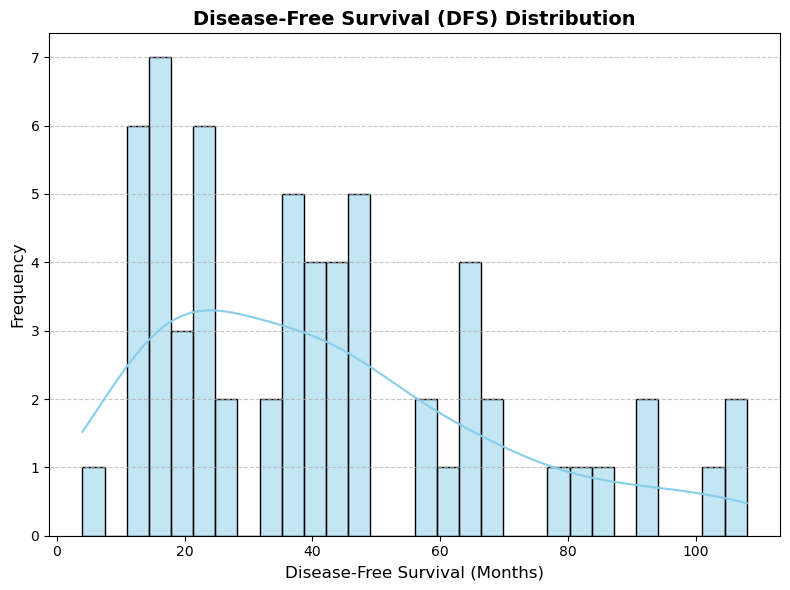
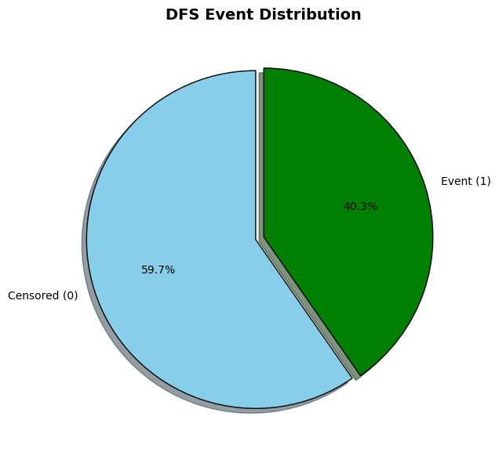
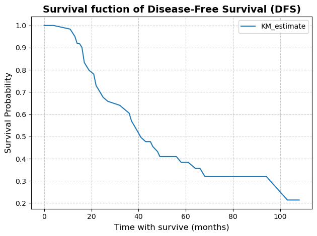
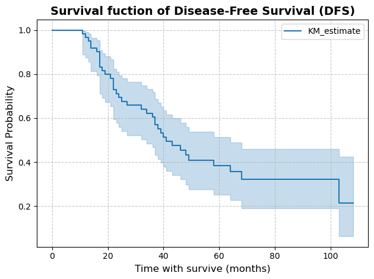
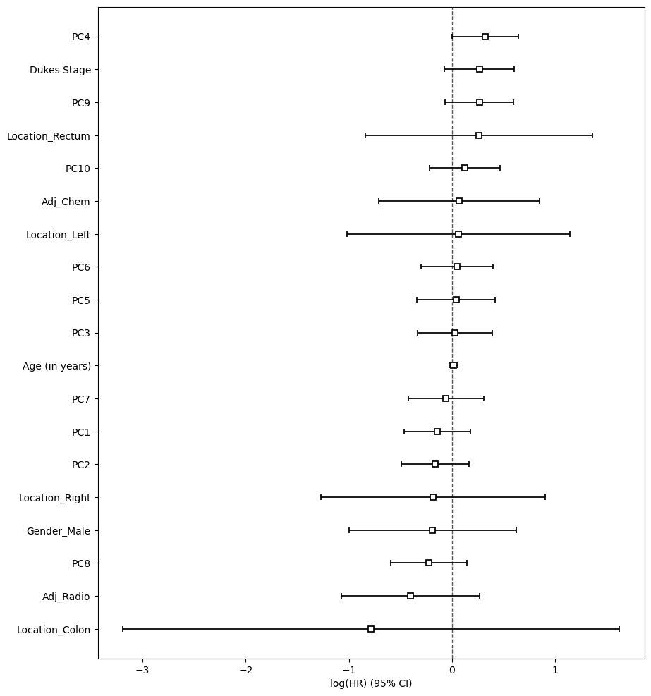
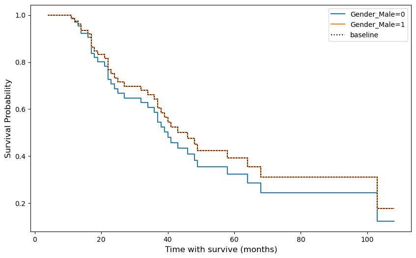
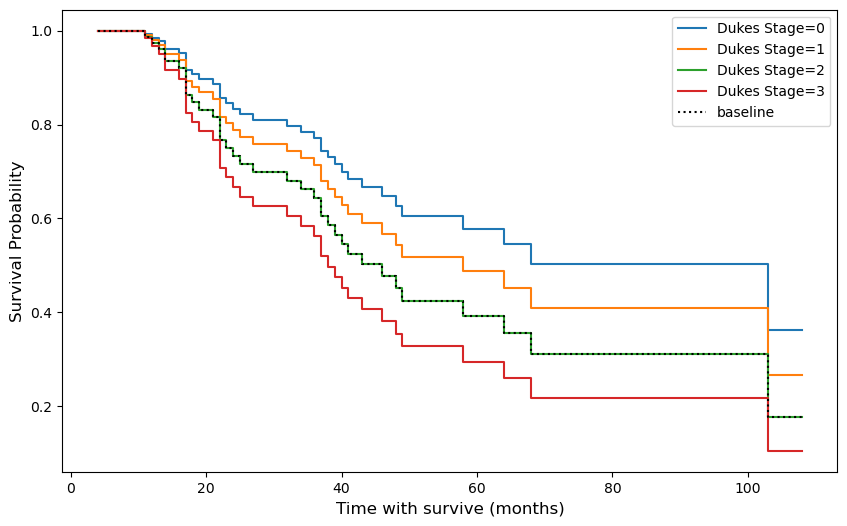
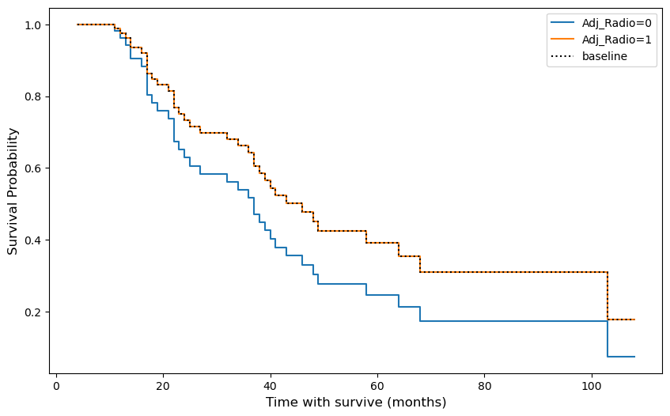
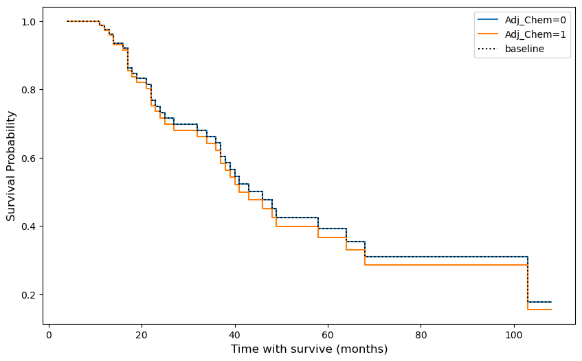

import matplotlib.pyplot as plt
import numpy as np
import seaborn as sns
from sklearn.decomposition import PCA
import pandas as pd
from sklearn.compose import ColumnTransformer, make_column_transformer
from sklearn.dummy import DummyClassifier
from sklearn.ensemble import RandomForestClassifier, RandomForestRegressor
from sklearn.impute import SimpleImputer
from sklearn.linear_model import LogisticRegression, Ridge
from sklearn.metrics import confusion_matrix
from sklearn.model_selection import (
cross_val_predict,
cross_val_score,
cross_validate,
train_test_split,
)
from sklearn.pipeline import Pipeline, make_pipeline
from sklearn.preprocessing import (
FunctionTransformer,
OneHotEncoder,
OrdinalEncoder,
StandardScaler,
)
import lifelinesSurvival Analysis for Colorectal Cancer Patients
Imports
EDA
patient_data = pd.read_csv("data/Colorectal Cancer Patient Data.csv")
gene_expression_data = pd.read_csv("data/Colorectal Cancer Gene Expression Data.csv")
display(patient_data.info())
display(gene_expression_data.info())<class 'pandas.core.frame.DataFrame'>
RangeIndex: 63 entries, 0 to 62
Data columns (total 10 columns):
# Column Non-Null Count Dtype
--- ------ -------------- -----
0 Unnamed: 0 63 non-null int64
1 ID_REF 62 non-null object
2 Age (in years) 62 non-null float64
3 Dukes Stage 62 non-null object
4 Gender 62 non-null object
5 Location 62 non-null object
6 DFS (in months) 62 non-null float64
7 DFS event 62 non-null float64
8 Adj_Radio 62 non-null float64
9 Adj_Chem 62 non-null float64
dtypes: float64(5), int64(1), object(4)
memory usage: 5.1+ KBNone<class 'pandas.core.frame.DataFrame'>
RangeIndex: 1935 entries, 0 to 1934
Data columns (total 64 columns):
# Column Non-Null Count Dtype
--- ------ -------------- -----
0 Unnamed: 0 1935 non-null int64
1 ID_REF 1935 non-null object
2 GSM877126 1935 non-null float64
3 GSM877127 1935 non-null float64
4 GSM877128 1935 non-null float64
5 GSM877129 1935 non-null float64
6 GSM877130 1935 non-null float64
7 GSM877131 1935 non-null float64
8 GSM877132 1935 non-null float64
9 GSM877133 1935 non-null float64
10 GSM877134 1935 non-null float64
11 GSM877135 1935 non-null float64
12 GSM877136 1935 non-null float64
13 GSM877137 1935 non-null float64
14 GSM877138 1935 non-null float64
15 GSM877139 1935 non-null float64
16 GSM877140 1935 non-null float64
17 GSM877141 1935 non-null float64
18 GSM877142 1935 non-null float64
19 GSM877143 1935 non-null float64
20 GSM877144 1935 non-null float64
21 GSM877145 1935 non-null float64
22 GSM877146 1935 non-null float64
23 GSM877147 1935 non-null float64
24 GSM877148 1935 non-null float64
25 GSM877149 1935 non-null float64
26 GSM877150 1935 non-null float64
27 GSM877151 1935 non-null float64
28 GSM877152 1935 non-null float64
29 GSM877153 1935 non-null float64
30 GSM877154 1935 non-null float64
31 GSM877155 1935 non-null float64
32 GSM877156 1935 non-null float64
33 GSM877157 1935 non-null float64
34 GSM877158 1935 non-null float64
35 GSM877159 1935 non-null float64
36 GSM877160 1935 non-null float64
37 GSM877161 1935 non-null float64
38 GSM877162 1935 non-null float64
39 GSM877163 1935 non-null float64
40 GSM877164 1935 non-null float64
41 GSM877165 1935 non-null float64
42 GSM877166 1935 non-null float64
43 GSM877167 1935 non-null float64
44 GSM877168 1935 non-null float64
45 GSM877169 1935 non-null float64
46 GSM877170 1935 non-null float64
47 GSM877171 1935 non-null float64
48 GSM877173 1935 non-null float64
49 GSM877174 1935 non-null float64
50 GSM877175 1935 non-null float64
51 GSM877176 1935 non-null float64
52 GSM877177 1935 non-null float64
53 GSM877178 1935 non-null float64
54 GSM877179 1935 non-null float64
55 GSM877180 1935 non-null float64
56 GSM877181 1935 non-null float64
57 GSM877182 1935 non-null float64
58 GSM877183 1935 non-null float64
59 GSM877184 1935 non-null float64
60 GSM877185 1935 non-null float64
61 GSM877186 1935 non-null float64
62 GSM877187 1935 non-null float64
63 GSM877188 1935 non-null float64
dtypes: float64(62), int64(1), object(1)
memory usage: 967.6+ KBNone# Catch ID_REF from patient_data
patient_ids = list(patient_data['ID_REF'].dropna())
# Select relative columns from gene_expression_data
filtered_gene_expression = gene_expression_data[['ID_REF'] + patient_ids]# Transposed gene_expression_data
transposed_gene_expression = filtered_gene_expression.set_index('ID_REF').T
# Use PCA to decreasing the dimension
pca = PCA(n_components=10)
gene_data_pca = pca.fit_transform(transposed_gene_expression)
gene_data_pca_df = pd.DataFrame(
gene_data_pca,
index=transposed_gene_expression.index,
columns=[f'PC{i+1}' for i in range(gene_data_pca.shape[1])]
)
gene_data_pca_df.index.name = 'ID_REF'# Merge data by ID_REF
cancer_df = pd.merge(patient_data, gene_data_pca_df, on='ID_REF', how='inner')
display(cancer_df.head())| Unnamed: 0 | ID_REF | Age (in years) | Dukes Stage | Gender | Location | DFS (in months) | DFS event | Adj_Radio | Adj_Chem | PC1 | PC2 | PC3 | PC4 | PC5 | PC6 | PC7 | PC8 | PC9 | PC10 | |
|---|---|---|---|---|---|---|---|---|---|---|---|---|---|---|---|---|---|---|---|---|
| 0 | 0 | GSM877126 | 62.0 | A | Male | Left | 108.0 | 0.0 | 1.0 | 0.0 | 10.034928 | -2.563461 | 0.553594 | 3.786064 | 5.491033 | 2.113068 | 0.850123 | -1.365781 | -1.001487 | 0.467374 |
| 1 | 1 | GSM877127 | 77.0 | B | Male | Left | 40.0 | 1.0 | 1.0 | 0.0 | 3.952900 | 5.896938 | -9.498808 | -8.151790 | -1.408558 | 3.904793 | 2.074637 | 3.621052 | 1.138539 | 4.319512 |
| 2 | 2 | GSM877128 | 66.0 | C | Female | Left | 49.0 | 0.0 | 1.0 | 0.0 | 5.775725 | -3.307617 | -1.514136 | 1.656845 | 0.277657 | 0.466875 | -0.887899 | 2.521145 | -6.819103 | 2.272644 |
| 3 | 3 | GSM877129 | 72.0 | D | Female | Left | 45.0 | 0.0 | 1.0 | 1.0 | 12.069910 | -3.575149 | 0.164506 | 0.873292 | -0.304559 | -1.279556 | -1.271283 | 4.878356 | 0.760081 | -4.307443 |
| 4 | 4 | GSM877130 | 75.0 | C | Male | Left | 40.0 | 0.0 | 0.0 | 1.0 | 0.704046 | 5.934426 | 4.480248 | -1.633834 | 2.685619 | 0.053008 | 3.949680 | 2.330419 | 0.315755 | 0.129697 |
# Drop columns: "unnamed: 0", "ID_REF"
cancer_df = cancer_df.drop(columns=["Unnamed: 0", "ID_REF"], errors='ignore')display(cancer_df.info())<class 'pandas.core.frame.DataFrame'>
RangeIndex: 62 entries, 0 to 61
Data columns (total 18 columns):
# Column Non-Null Count Dtype
--- ------ -------------- -----
0 Age (in years) 62 non-null float64
1 Dukes Stage 62 non-null object
2 Gender 62 non-null object
3 Location 62 non-null object
4 DFS (in months) 62 non-null float64
5 DFS event 62 non-null float64
6 Adj_Radio 62 non-null float64
7 Adj_Chem 62 non-null float64
8 PC1 62 non-null float64
9 PC2 62 non-null float64
10 PC3 62 non-null float64
11 PC4 62 non-null float64
12 PC5 62 non-null float64
13 PC6 62 non-null float64
14 PC7 62 non-null float64
15 PC8 62 non-null float64
16 PC9 62 non-null float64
17 PC10 62 non-null float64
dtypes: float64(15), object(3)
memory usage: 8.8+ KBNonedisplay(cancer_df.describe())| Age (in years) | DFS (in months) | DFS event | Adj_Radio | Adj_Chem | PC1 | PC2 | PC3 | PC4 | PC5 | PC6 | PC7 | PC8 | PC9 | PC10 | |
|---|---|---|---|---|---|---|---|---|---|---|---|---|---|---|---|
| count | 62.000000 | 62.000000 | 62.000000 | 62.000000 | 62.000000 | 6.200000e+01 | 6.200000e+01 | 6.200000e+01 | 6.200000e+01 | 6.200000e+01 | 6.200000e+01 | 6.200000e+01 | 6.200000e+01 | 6.200000e+01 | 6.200000e+01 |
| mean | 61.112903 | 41.774194 | 0.596774 | 0.532258 | 0.483871 | -6.088320e-16 | 5.730183e-16 | 1.189013e-15 | -8.595275e-16 | -5.479488e-16 | -9.848753e-16 | 1.969751e-15 | 5.318326e-16 | 1.633102e-15 | 6.589711e-16 |
| std | 9.581582 | 26.288076 | 0.494550 | 0.503032 | 0.503819 | 5.984986e+00 | 5.448934e+00 | 5.289646e+00 | 3.707437e+00 | 3.560856e+00 | 3.043141e+00 | 2.942446e+00 | 2.866659e+00 | 2.747006e+00 | 2.688011e+00 |
| min | 28.000000 | 4.000000 | 0.000000 | 0.000000 | 0.000000 | -8.734801e+00 | -1.009633e+01 | -1.348958e+01 | -8.151790e+00 | -7.374372e+00 | -6.927775e+00 | -9.725663e+00 | -8.668528e+00 | -6.819103e+00 | -6.508976e+00 |
| 25% | 56.250000 | 19.500000 | 0.000000 | 0.000000 | 0.000000 | -4.910225e+00 | -3.489797e+00 | -2.602366e+00 | -2.750916e+00 | -2.110189e+00 | -1.456760e+00 | -1.386963e+00 | -1.694862e+00 | -1.549649e+00 | -1.149974e+00 |
| 50% | 62.000000 | 38.000000 | 1.000000 | 1.000000 | 0.000000 | -1.208833e+00 | -8.254880e-01 | 1.111445e-01 | -3.605246e-01 | -1.906082e-01 | 5.593847e-02 | 3.260334e-01 | -8.100692e-02 | 4.634558e-01 | 2.190788e-01 |
| 75% | 67.000000 | 57.500000 | 1.000000 | 1.000000 | 1.000000 | 4.018212e+00 | 2.732425e+00 | 2.627977e+00 | 2.183317e+00 | 1.288891e+00 | 2.091801e+00 | 1.633154e+00 | 2.266200e+00 | 1.697653e+00 | 1.067278e+00 |
| max | 78.000000 | 108.000000 | 1.000000 | 1.000000 | 1.000000 | 1.345370e+01 | 1.610472e+01 | 1.591209e+01 | 9.773375e+00 | 1.891697e+01 | 7.146467e+00 | 6.469778e+00 | 5.776316e+00 | 4.685594e+00 | 8.002474e+00 |
- Age Distribution:
- Patients are mostly older (median: 62 years), with a moderately small spread.
- DFS (Disease-Free Survival):
- DFS shows high variability, ranging from very short (4 months) to very long (108 months).
- Median DFS is 38 months.
- Treatment Distribution:
- Radiotherapy (
Adj_Radio) and chemotherapy (Adj_Chem) are evenly distributed across the population (~53% and ~48%, respectively).
- Radiotherapy (
# Count missing values
display(cancer_df.isnull().sum())Age (in years) 0
Dukes Stage 0
Gender 0
Location 0
DFS (in months) 0
DFS event 0
Adj_Radio 0
Adj_Chem 0
PC1 0
PC2 0
PC3 0
PC4 0
PC5 0
PC6 0
PC7 0
PC8 0
PC9 0
PC10 0
dtype: int64- Each column (
Age (in years),Dukes Stage,Gender,Location,DFS (in months),DFS event,Adj_Radio,Adj_Chem,PC1-PC10) has 0 missing entries.
# Plot the histogram using Seaborn for better aesthetics
plt.figure(figsize=(8, 6))
sns.histplot(
data=cancer_df,
x='DFS (in months)',
bins=30,
kde=True,
color='skyblue',
edgecolor='black'
)
plt.title("Disease-Free Survival (DFS) Distribution", fontsize=14, fontweight='bold')
plt.xlabel("Disease-Free Survival (Months)", fontsize=12)
plt.ylabel("Frequency", fontsize=12)
plt.xticks(fontsize=10)
plt.yticks(fontsize=10)
plt.grid(axis='y', linestyle='--', alpha=0.7)
plt.tight_layout()
plt.show()
- Distribution Shape:
- The distribution of DFS (in months) is right-skewed, with most patients having shorter DFS durations.
- A small number of patients have DFS extending to 100+ months.
- Frequency Peaks:
- There are noticeable peaks around 10–20 months and 50–60 months, indicating clusters of patients with shorter and moderate DFS durations.
- Spread:
- DFS durations range from 4 months (minimum) to 108 months (maximum).
- Most values are concentrated below 60 months, as indicated by the density curve.
# Count the values for DFS event
dfs_event_counts = cancer_df['DFS event'].value_counts()
fig, ax = plt.subplots(figsize=(7, 7))
colors = ['skyblue', 'green']
explode = [0.05, 0]
ax.pie(
dfs_event_counts,
labels=['Censored (0)', 'Event (1)'],
autopct='%1.1f%%',
startangle=90,
explode=explode,
colors=colors,
shadow=True,
wedgeprops={'edgecolor': 'black'}
)
ax.set_title("DFS Event Distribution", fontsize=14, fontweight='bold')
plt.show()
- Distribution of Events:
- Censored (0): Represents 59.7% of the data, indicating these patients did not experience a DFS event (e.g., recurrence or death) during the observation period.
- Event (1): Represents 40.3% of the data, indicating these patients experienced a DFS event.
- Balance:
- The dataset shows a relatively balanced distribution between censored and event occurrences, with a slight majority in the censored group.
- Implications for Analysis:
- This balanced proportion provides a robust dataset for survival analysis, as both censored and event groups are adequately represented.
Preprocessing
| Feature Type | Columns | Transformation | Details |
|---|---|---|---|
| Passthrough Features | DFS (in months), DFS event, Age (in years), Adj_Radio, Adj_Chem |
Passthrough | These features are kept as is, without any transformations. |
| Categorical Features | Location |
OneHotEncoder | Encodes categories into one-hot vectors. Handles unknown categories using handle_unknown="ignore". |
| Binary Features | Gender |
OneHotEncoder with drop="if_binary" |
Encodes binary features into one-hot vectors and drops one level to avoid redundancy. |
| Ordinal Features | Dukes Stage |
OrdinalEncoder | Encodes the ordered categories (['A', 'B', 'C', 'D']) into integers. |
| Numeric Features | PC1, PC2, …, PCn (from Principal Component Analysis) |
StandardScaler | Standardizes features to have a mean of 0 and a standard deviation of 1. |
# Define feature groups
passthrough_features = ['DFS (in months)', 'DFS event', 'Age (in years)', 'Adj_Radio', 'Adj_Chem']
categorical_features = ['Location']
binary_features = ['Gender']
ordinary_features = ['Dukes Stage']
numeric_features = [f'PC{i+1}' for i in range(gene_data_pca.shape[1])]
preprocessor = make_column_transformer(
(
"passthrough",
passthrough_features,
),
(
OneHotEncoder(handle_unknown="ignore"),
categorical_features,
),
(
OneHotEncoder(drop="if_binary", handle_unknown="ignore"),
binary_features,
),
(
OrdinalEncoder(categories=[['A', 'B', 'C', 'D']]),
ordinary_features,
),
(
StandardScaler(),
numeric_features,
)
)preprocessor.fit(cancer_df)ColumnTransformer(transformers=[('passthrough', 'passthrough',
['DFS (in months)', 'DFS event',
'Age (in years)', 'Adj_Radio', 'Adj_Chem']),
('onehotencoder-1',
OneHotEncoder(handle_unknown='ignore'),
['Location']),
('onehotencoder-2',
OneHotEncoder(drop='if_binary',
handle_unknown='ignore'),
['Gender']),
('ordinalencoder',
OrdinalEncoder(categories=[['A', 'B', 'C',
'D']]),
['Dukes Stage']),
('standardscaler', StandardScaler(),
['PC1', 'PC2', 'PC3', 'PC4', 'PC5', 'PC6',
'PC7', 'PC8', 'PC9', 'PC10'])])In a Jupyter environment, please rerun this cell to show the HTML representation or trust the notebook. On GitHub, the HTML representation is unable to render, please try loading this page with nbviewer.org.
ColumnTransformer(transformers=[('passthrough', 'passthrough',
['DFS (in months)', 'DFS event',
'Age (in years)', 'Adj_Radio', 'Adj_Chem']),
('onehotencoder-1',
OneHotEncoder(handle_unknown='ignore'),
['Location']),
('onehotencoder-2',
OneHotEncoder(drop='if_binary',
handle_unknown='ignore'),
['Gender']),
('ordinalencoder',
OrdinalEncoder(categories=[['A', 'B', 'C',
'D']]),
['Dukes Stage']),
('standardscaler', StandardScaler(),
['PC1', 'PC2', 'PC3', 'PC4', 'PC5', 'PC6',
'PC7', 'PC8', 'PC9', 'PC10'])])['DFS (in months)', 'DFS event', 'Age (in years)', 'Adj_Radio', 'Adj_Chem']
passthrough
['Location']
OneHotEncoder(handle_unknown='ignore')
['Gender']
OneHotEncoder(drop='if_binary', handle_unknown='ignore')
['Dukes Stage']
OrdinalEncoder(categories=[['A', 'B', 'C', 'D']])
['PC1', 'PC2', 'PC3', 'PC4', 'PC5', 'PC6', 'PC7', 'PC8', 'PC9', 'PC10']
StandardScaler()
new_columns = (
passthrough_features
+ preprocessor.named_transformers_["onehotencoder-1"]
.get_feature_names_out(categorical_features)
.tolist()
+ preprocessor.named_transformers_["onehotencoder-2"]
.get_feature_names_out(binary_features)
.tolist()
+ preprocessor.named_transformers_["ordinalencoder"]
.get_feature_names_out(ordinary_features)
.tolist()
+ numeric_features
)cancer_df_surv = pd.DataFrame(
preprocessor.transform(cancer_df), index=cancer_df.index, columns=new_columns
)display(cancer_df_surv.head())| DFS (in months) | DFS event | Age (in years) | Adj_Radio | Adj_Chem | Location_Colon | Location_Left | Location_Rectum | Location_Right | Gender_Male | ... | PC1 | PC2 | PC3 | PC4 | PC5 | PC6 | PC7 | PC8 | PC9 | PC10 | |
|---|---|---|---|---|---|---|---|---|---|---|---|---|---|---|---|---|---|---|---|---|---|
| 0 | 108.0 | 0.0 | 62.0 | 1.0 | 0.0 | 0.0 | 1.0 | 0.0 | 0.0 | 1.0 | ... | 1.690371 | -0.474292 | 0.105510 | 1.029545 | 1.554643 | 0.700039 | 0.291275 | -0.480326 | -0.367550 | 0.175293 |
| 1 | 40.0 | 1.0 | 77.0 | 1.0 | 0.0 | 0.0 | 1.0 | 0.0 | 0.0 | 1.0 | ... | 0.665861 | 1.091053 | -1.810395 | -2.216717 | -0.398797 | 1.293620 | 0.710828 | 1.273473 | 0.417849 | 1.620073 |
| 2 | 49.0 | 0.0 | 66.0 | 1.0 | 0.0 | 0.0 | 1.0 | 0.0 | 0.0 | 0.0 | ... | 0.972914 | -0.611976 | -0.288582 | 0.450546 | 0.078611 | 0.154671 | -0.304219 | 0.886651 | -2.502641 | 0.852376 |
| 3 | 45.0 | 0.0 | 72.0 | 1.0 | 1.0 | 0.0 | 1.0 | 0.0 | 0.0 | 0.0 | ... | 2.033161 | -0.661475 | 0.031354 | 0.237474 | -0.086228 | -0.423905 | -0.435577 | 1.715649 | 0.278953 | -1.615547 |
| 4 | 40.0 | 0.0 | 75.0 | 0.0 | 1.0 | 0.0 | 1.0 | 0.0 | 0.0 | 1.0 | ... | 0.118596 | 1.097989 | 0.853899 | -0.444289 | 0.760363 | 0.017561 | 1.353270 | 0.819576 | 0.115883 | 0.048644 |
5 rows × 21 columns
Kaplan-Meier survival curve
kmf = lifelines.KaplanMeierFitter()
kmf.fit(cancer_df_surv["DFS (in months)"], cancer_df_surv["DFS event"])<lifelines.KaplanMeierFitter:"KM_estimate", fitted with 62 total observations, 25 right-censored observations>Survival curve
kmf.survival_function_.plot();
plt.title("Survival fuction of Disease-Free Survival (DFS)", fontsize=14, fontweight='bold')
plt.xlabel("Time with survive (months)", fontsize=12)
plt.ylabel("Survival Probability", fontsize=12)
plt.grid(True, linestyle='--', alpha=0.7)
plt.tight_layout()
plt.show()
- The Kaplan-Meier curve shows a gradual decline in survival probability, with the steepest drop in the first 40 months.
- The median DFS is approximately 40 months, indicating that 50% of patients experience disease recurrence or death by this time.
- A small subset of patients maintains disease-free survival for 100+ months, with survival probability stabilizing around 20%.
Error bars
kmf.plot_survival_function()
plt.title("Survival fuction of Disease-Free Survival (DFS)", fontsize=14, fontweight='bold')
plt.xlabel("Time with survive (months)", fontsize=12)
plt.ylabel("Survival Probability", fontsize=12)
plt.grid(True, linestyle='--', alpha=0.7)
plt.tight_layout()
plt.show()
- At earlier time points (e.g., 0–40 months), confidence intervals (shaded regions) are narrower, reflecting higher certainty due to a larger number of patients and observations.
- As survival time increases (e.g., beyond 60 months), fewer patients remain under observation, resulting in wider intervals and greater uncertainty in survival probability estimates.
Cox proportional hazards model
cph = lifelines.CoxPHFitter(penalizer=0.1)
cph.fit(cancer_df_surv, duration_col="DFS (in months)", event_col="DFS event")<lifelines.CoxPHFitter: fitted with 62 total observations, 25 right-censored observations>plt.figure(figsize=(10, 12))
cph.plot()
- Significant Predictors:
- Dukes Stage: Positive coefficient with a narrow CI that does not cross 0 too much, indicating a significant increase in hazard (increase the risk of recurrence or death).
- Adj_Radio: Narrow CI that does not cross 0 too much, suggesting a significant protective effect in reducing the hazard (reduce the risk of recurrence or death).
- Many PC which represnet specifc gene types have either positive or negative coefficients are significant which suggests that genes are significant predictors.
- Non-Significant Predictors:
- Predictors like Gender_Male, Location_Colon, and PC9 have confidence intervals that cross 0, indicating no statistically significant impact on hazard.
cph.plot_partial_effects_on_outcome("Gender_Male", [0, 1])
plt.xlabel("Time with survive (months)", fontsize=12)
plt.ylabel("Survival Probability", fontsize=12)
plt.gcf().set_size_inches(10, 6)
- Gender Differences in Survival:
- The survival probability for males is slightly higher than for females across most of the observation period.
- This indicates that males may have a marginally better survival rate in this dataset.
- No Significant Divergence:
- The survival curves for both genders follow a similar trend, with no substantial divergence observed, suggesting gender may not have a strong impact on survival.
cph.plot_partial_effects_on_outcome("Dukes Stage", [0, 1, 2, 3])
plt.xlabel("Time with survive (months)", fontsize=12)
plt.ylabel("Survival Probability", fontsize=12)
plt.gcf().set_size_inches(10, 6)
- Trend Over Time:
- Survival probability decreases for all stages over time, but the rate of decline is faster for higher stages (e.g., Dukes Stage 2 and 3).
- The survival curves are well-separated by stage, reflecting a clear impact of disease severity on survival outcomes.
- Long-Term Survival:
- Dukes Stage 0 and 1 stabilize at higher survival probabilities (~60-70%) after 80 months.
- Dukes Stage 3 has the lowest long-term survival (~20%).
cph.plot_partial_effects_on_outcome('Adj_Radio', [0, 1])
plt.xlabel("Time with survive (months)", fontsize=12)
plt.ylabel("Survival Probability", fontsize=12)
plt.gcf().set_size_inches(10, 6)
- Survival Probability with Radiotherapy:
- Patients who received radiotherapy have consistently higher survival probabilities compared to those who did not receive radiotherapy.
- Long-Term Survival:
- Patients who received radiotherapy stabilize at a higher survival probability (~40%) after 80 months, while those w who did not receive radiotherapy have a survival probability below 20%, indicating that radiotherapy improves disease-free survival (DFS) time.
cph.plot_partial_effects_on_outcome('Adj_Chem', [0, 1])
plt.xlabel("Time with survive (months)", fontsize=12)
plt.ylabel("Survival Probability", fontsize=12)
plt.gcf().set_size_inches(10, 6)
- Survival Probability with Chemotherapy:
- Patients who received chemotherapy have slightly lower survival probabilities compared to those who did not receive chemotherapy.
- Long-Term Survival:
- Both groups stabilize at similar survival probabilities (~20%) after 100 months, indicating minimal difference in long-term survival outcomes, suggesting that chemotherapy does not significantly impact disease-free survival (DFS) time.